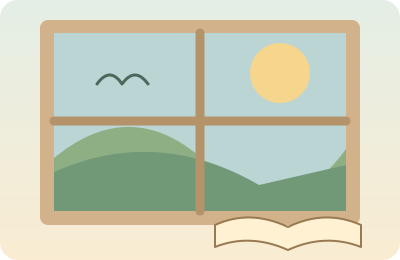

काव्य का स्वर
Poetic speaker
Audio uses your device’s Hindi voice; availability varies. No native recordings included.आज का नियम
Understand the conceptकाव्य में बोलने वाला स्वर रचना के भीतर निर्मित होता है। उसके भाव का अनुमान ध्वनि, शब्द, बिंब और संबोधन के आधार पर करें।
शब्द और अर्थ
Vocabularyकाव्य
poetryस्वर
voiceभाव
emotionअनुभूति
experienceवक्ता
speakerवातावरण
moodउदाहरण और पठन
Examples & readingकवि का वक्ता स्वयं कवि हो यह आवश्यक नहीं।
धीमी गति उदासी का प्रभाव दे सकती है।
तीव्र क्रियाएँ ऊर्जा दिखा सकती हैं।
भाव का प्रमाण शब्दों में खोजें।
विस्तृत पठन
Extended reading
धीमी सुबह — मौलिक कविता
खिड़की पर ठहरी धूप,
पत्तों से छनकर आई।
चुप आँगन में एक चिड़िया,
नींद की सीमा तोड़ गई।
मैंने पुस्तक फिर से खोली,
शब्दों में एक दिन जागा।
बाहर धीरे-धीरे उजाला,
भीतर भी कुछ बदलने लगा।
पठन-बोध
कविता में कौन बोल रहा है?
एक प्रथम पुरुष वक्ता।
बाहर और भीतर का संबंध क्या है?
बाहरी उजाला भीतर के परिवर्तन का संकेत देता है।
क्या सभी पंक्तियों में निश्चित तुक है?
नहीं, लय मुख्यतः शब्द और विराम से आती है।
बोलें और सोचें
Apply itपाठ की दो पंक्तियाँ लेकर स्वर और भाव का कारण बताएं।
लेखन अभ्यास
Writing practiceकविता के स्वर को शब्द और लय से समझें।
कविता के स्वर को शब्द और लय से समझें।
उदाहरण को आधार बनाकर अपने स्वतंत्र वाक्य या अनुच्छेद लिखें।
स्वतंत्र लेखन कक्ष
Writing workspace0 शब्द
निजी जानकारी न लिखें। मसौदा सहेजना वैकल्पिक है; कोई सर्वर या स्वचालित मूल्यांकन नहीं।अपना ज्ञान जाँचें
Check your learningक्या वक्ता और कवि हमेशा एक हैं?
उत्तर देखें
नहीं।
इस पाठ में दिए गए अर्थ से शब्द मिलाएँ: poetry
उत्तर
काव्य
कार्यपत्रक · Worksheet
Completion is self-marked and saved locally.